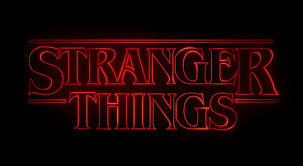
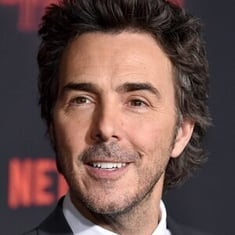
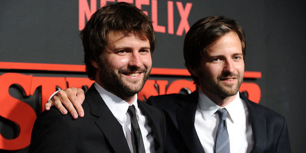
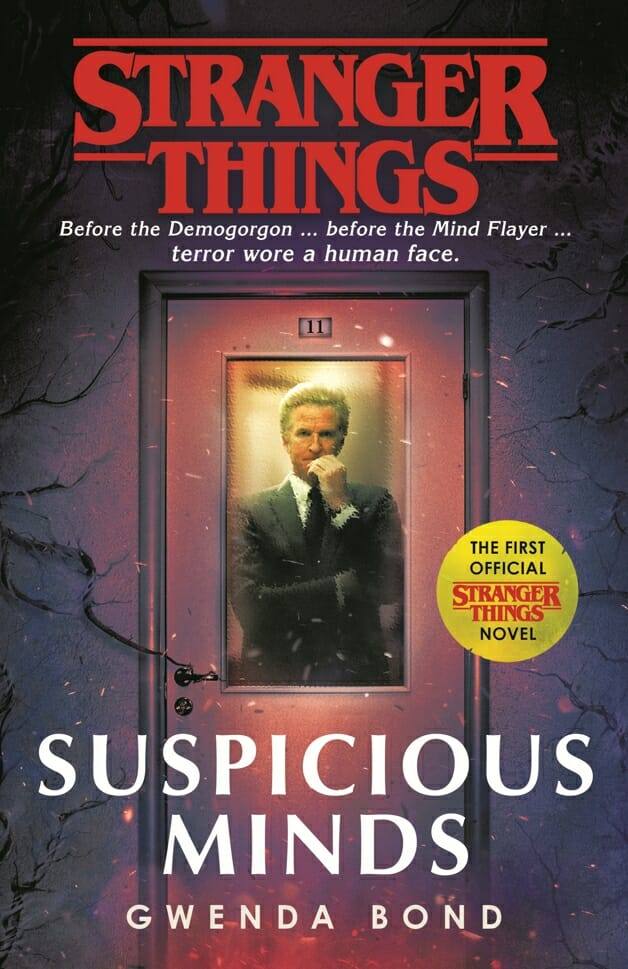

A série foi lançada dia 15 de julho de 2016.
Ficção científica; terror; suspense; drama adolescente
Situada no início dos anos 1980, Stranger Things se passa na cidade rural fictícia de Hawkins, Indiana. Como fachada, o laboratório da região realizava experimentos científicos para o Departamento de Energia Americano, quando na realidade, os pesquisadores ali investiram em experimentos com o paranormal e o sobrenatural, incluindo o uso de cobaias humanas. Não intencionalmente, eles criaram um portal para uma dimensão alternativa conhecida como Mundo Invertido, o que iria impactar a vida dos residentes da pequena cidade. Em 1983, quando Will Byers (Noah Schnapp), um menino de 12 anos, desaparece misteriosamente, o xerife Jim Hopper (David Harbour) inicia uma operação para encontrá-lo. Enquanto isso, Mike (Finn Wolfhard), Dustin (Gaten Matarazzo) e Lucas (Caleb McLaughlin), melhores amigos de Will, decidem procurá-lo por conta própria. Mas as investigações acabam levando o grupo em direção aos experimentos secretos do governo e a Eleven (Millie Bobby Brown), uma peculiar menina perdida na floresta. Assim como as crianças, a mãe Joyce Byers (Winona Ryder) está determinada e fará o impossível para rever o filho.

Shawn Levy, diretor e produtor executivo de Stranger Things

Matt Duffer e Ross Duffer (nascidos em fevereiro de 1984), conhecidos profissionalmente como 'Os Irmãos Duffer' . São diretores, editores, atores, produtores e escritores americanos. Eles são irmãos gêmeos mais conhecidos por sua criação Stranger Things, um programa de televisão original Netflix.
A trama é uma verdadeira carta de amor aos anos 80. Muitas referências à cultura pop da época já foram encontradas por quem já conferiu pelo menos alguns episódios. Do videogame Atari às roupas e trilha sonora, muitos símbolos daquele período prometem levar o público a uma viagem nostálgica pelo tempo, que ainda inclui menções a clássicos do cinema como Poltergeist – O Fenômeno (1982), O enigma de outro mundo (1982), Evil Dead – A Morte do Demônio(1982) e, até, Os Goonies (1985).
A obra foi escrita por Gwenda Bond, uma autora que trabalhou de perto com Paul Dichter, roteirista da série. É verdade que, antes disso, Stranger Things ganhou uma versão HQ chamada Stranger Things: SIX. O quadrinho da Dark Horse foi escrito por Jody Houser e ilustrado por Edgar Salazar. Trata-se da história de Francine (ou Six), uma jovem poderosa que cai nas mãos de Dr. Brenner, num prelúdio da primeira fase.
O primeiro livro apresentado da série foi "Raizes do mal". A trama de Raízes do Mal se passa anos antes da história contada pela primeira temporada. Em inglês, a obra se chama “Stranger Things: Suspicious Minds” (ou Stranger Things: Mentes Suspeitas, em tradução livre) e é ambientada no fim da década de 1960, no período em que a mãe de Eleven era uma cobaia do projeto MKULTRA.

Em 1969, enquanto os Estados Unidos passavam por mudanças turbulentas em meio a protestos contra a Guerra do Vietnã. Neste cenário, Terry Ives, a mãe da Eleven, está insatisfeita com a vida sem propósito que leva em Indiana. Ao ficar sabendo de um experimento do governo na cidade de Hawkins, ela decide participar e aí tudo começa.
Aos poucos, descobre que o laboratório, comandado pelo Dr. Martin Brenner, um homem cruel e inescrupuloso, guarda segredos. Para descobrir a verdade, Terry vai contar com a ajuda de uma cobaia misteriosa que vive trancada e que está cada dia mais poderosa, uma criança com habilidades sobre-humanas e que tem um número no lugar do nome: 008. Lembrem-se de que é a Kali, revelada na segunda temporada.
Fatos para lembrar: o nome de nascimento de Eleven é Jane Ives, ela é filha de Terry Ives. Depois do nascimento de Jane, ela foi roubada e criada pelo Dr. Martin Brenner.
Da misteriosa menina com poderes psíquicos vivida por Millie Bobby Brown (sem dúvida a grande revelação da série) até o menos promissor “garoto-popular-da-escola”, Steve (Joe Keery), todos os personagens têm seu momento e, de um jeito ou de outro, acabam cativando o público. Ryder mostra que ainda tem muito o que explorar ao interpretar a mãe que perdeu o filho e está à beira da loucura, e não há como não se apaixonar pelo trio formado pelos pequenos Finn Wolfhard, Gaten Matarazzo e Caleb McLaughlin.
A caracterização oitentista está perfeita. A atmosfera retrô recriada é simplesmente impecável!
Ao contrário das séries de longa duração com temporadas mais extensas, a série Stranger Things é compacta e sem excessos. Não há “fillers” (como são chamados os episódios feitos para preencher o buraco entre um evento e outro) e absolutamente todas as cenas são necessárias. Forma-se uma trama bem amarrada e completa – quase como um filme um pouco mais longo.
Stranger Things recebeu inúmeros prêmios e indicações em toda a indústria do entretenimento, incluindo dez indicações ao Primetime Emmy Award e quatro indicações ao Globo de Ouro durante a segunda temporada. O elenco da série recebeu vários deles: o elenco da primeira temporada da série ganhou o Screen Actors Guild Award de Melhor Elenco em Série Dramática, enquanto os protagonistas da série Ryder, Brown e Harbour ganharam prêmios e indicações individuais.
Veja alguns desses prêmios;
Lançada na sexta-feira (27/05), a 4ª temporada de Stranger Things finalmente chegou à Netflix. Os fãs estavam ansiosos para saber quando poderiam conferir a saga de seus personagens preferidos. E com o intitulado “Chapter One: The Hellfire Club”, os irmãos Duffer mostraram ao público que ainda há muitos mistérios pela frente.
Para começo de conversa, a quarta temporada de Stranger Things terá mais episódios -- 9 ao invés dos habituais 8. Cada episódio terá cerca 1h de duração ao contrário dos tradicionais 45 minutos de antes.
Ao The Wrap, os Irmãos Duffer, criadores de Stranger Things, revelaram como os episódios da 4ª temporada são como pequenos filmes, "principalmente os episódios sete e nove", declarou Matt Duffer. "E o nono é um longo filme".
Questionado sobre quão longo, Ross Duffer disse, implicitamente: "Ainda estamos finalizando, mas digamos que são mais de duas horas. É um dos grandes."